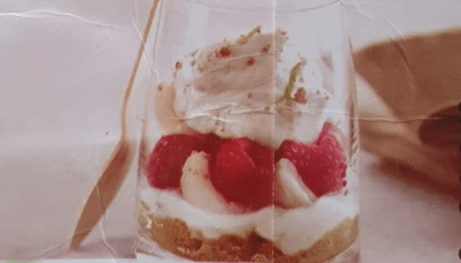

Tiramisu Coco Framboises Litchis
Recette pour 8 personnes
Ingrédients
- 400ml de crème de coco
- 400g de mascarpone
- 100g de sucre
- 200g de framboises fraîches
- 2 boites de litchis au sirop
- 2 petits citrons verts non traités
- 300g de spéculoos
Temps de préparation
15 minutes
Temps de réfrigération
2 heures
Étapes
- Répartir les spéculoos émiettés au fond de huit verres.
- Mélanger la crème de coco, le mascarpone, le sucre, le zeste et le jus des deux citrons.
- Verser la moitié de la crème sur les biscuits. Ajouter les litchis coupés en deux et les framboises.
- Répartir ensuite l'autre moitié de la crème mascarpone-coco dans les verres.
- Réserver au frais au moins une heure.
Ce tiramisu est aussi excellent avec des fraises fraîches.